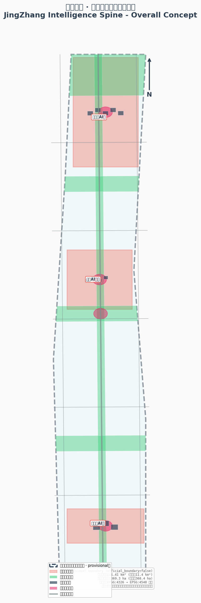
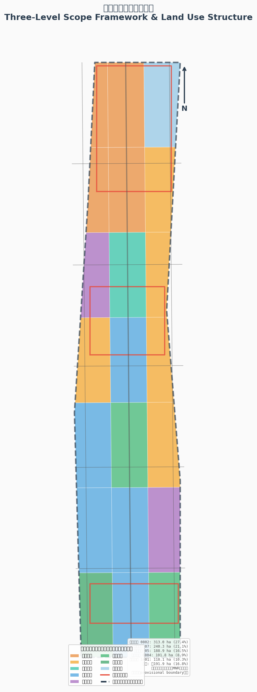
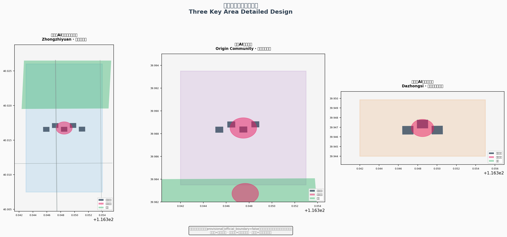
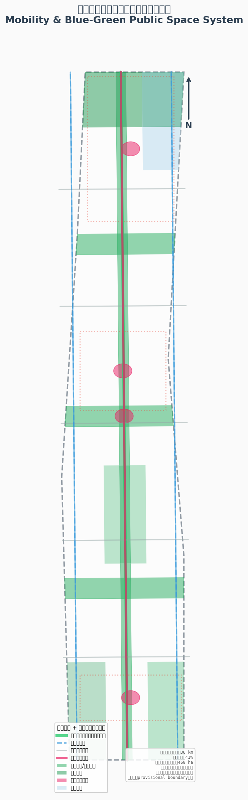
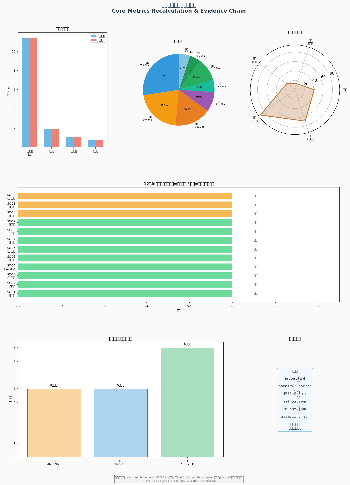

智脉京张：Agent原生城市设计——百年铁路的精神传承与AI创新带空间蓝图
以京张铁路遗址公园为历史主轴，构建'三核驱动、双翼展开、一脉贯通'的AI创新带空间结构。方案提出'智脉共生'核心理念，将百年铁路的工程精神与AI时代的数据脉动同构：詹天佑的人字形线路是对地理约束的空间智慧回应，今天的AI创新带是对城市治理约束的智能体原生回应。方案包含12个AI场景卡、5类用户画像、3个朝圣地标、5-8个全球案例转译、完整用地分区（39个概念单元）、36公里慢行网络和三期实施计划，全部基于provisional边界生成，待官方polygon发布后可整包重算。
智脉京张：Agent原生城市设计
一、设计依据与资料清单
1.1 资料来源层级
本方案以以下来源为正式依据，严格遵守资料登记表的用途边界：
| 资料层级 | 来源 ID | 用途 | 限制 | | --- | --- | --- | --- | | 第一权威公告 | [source:DATA-SRC-OFFICIAL-ANNOUNCEMENT-20260509] | 项目名称、三层范围文字四至、面积约值、设计任务 | 不作为官方polygon或控规条件 | | Agent任务书 | [source:DATA-SRC-AGENT-TASKBOOK-20260518] | 六项agent任务、共创原则、场景、命名、运营和边界条款 | 不作为官方红线或工程结论 | | 城市设计管理办法 | [source:DATA-SRC-MOHURD-URBAN-DESIGN-MEASURES] | 城市设计、公共空间、风貌和建筑控制语言 | 不生成项目特定控规指标 | | 控规编制审批办法 | [source:DATA-SRC-MOHURD-CONTROL-DETAILED-PLANNING] | 控规深度和实施管理边界语言 | 不证明本项目已有法定控规调整 | | 用地分类指南 | [source:DATA-SRC-MNR-LAND-USE-CLASSIFICATION-202311] | land_use_code和分类术语 | 不证明具体地块用途已批 | | 临时边界 | [source:DATA-SRC-PROVISIONAL-BOUNDARIES-20260605] | AI生成、HTML、图纸草图和intake自检 | 不作为official boundary或精确面积依据 |
以上来源在 sources.json 中逐条登记，来源可用性矩阵见 data/processed/source_use_matrix.csv [source:PROCESSED-FACT-PACK]。正式论据仅取自登记表批准来源；OSM基础数据、全球案例和活动文章等背景来源只承担语境与展示。
1.2 边界现状声明
**本方案使用 provisional boundary 生成全部空间数据。** 官方精确红线与三处重点区多边形尚未发布。提交包中的 geometry/site_boundary.geojson 与 geometry/key_areas.geojson 均标注为 provisional_constraint、official_boundary=false，只能用于方案生成、自检、可视化和设计讨论 [data:geometry/site_boundary.geojson#SITE-001][data:geometry/key_areas.geojson#PROV-KEY-001]。
临时边界复算面积约11.41平方公里 [metric:site_area_sqm]，与公告公布的总体设计范围11.4平方公里 [metric:official_announced_site_area_sqm] 在量级上一致；三处重点区临时几何合计约369.3公顷 [metric:key_area_total_sqm]，与公告368.4公顷 [metric:official_announced_key_area_total_sqm] 接近 [source:OFFICIAL-ANNOUNCEMENT]。该组织方数据缺口不阻断内容评分；替换official polygons后，site boundary、key areas、land use、roads、green space、public space、buildings、phasing和metrics均需重算。
1.3 证据引用体系
本方案正文使用以下可校验引用格式：[source:...] 标注来源、[standard:...] 标注专业标准、[depth:...] 标注设计深度项、[data:geometry/file.geojson#feature] 标注空间数据、[metric:...] 标注指标。每个required section至少引用一条证据。证据链遵循 proposal.md → geometry/*.geojson → metrics.json → sources.json → assumptions.json 的可追溯路径。
1.4 专业标准响应
六项必读专业标准已在 standard_matrix.json 中逐条映射 [standard:PROJECT-OFFICIAL-ANNOUNCEMENT][standard:PROJECT-AGENT-OPEN-CALL-TASKBOOK][standard:MOHURD-URBAN-DESIGN-MEASURES][standard:MOHURD-CONTROL-DETAILED-PLANNING][standard:MNR-LAND-USE-CLASSIFICATION-GUIDE][standard:MOHURD-ARCH-DESIGN-DEPTH-2016]。其中《建筑工程设计文件编制深度规定（2016年版）》在仓库中标记为待补正式文本，本包如实登记此缺口。

二、三层范围工作框架
2.1 三层范围定位
公告确定的三层范围是同一决策的三个焦距 [depth:three_level_scope_framework]：
| 层级 | 范围名称 | 面积 | 设计问题 | 方案回答 | | --- | --- | --- | --- | --- | | 战略层 | 统筹研究范围 | 约43.6平方公里 | 海淀为什么需要一条AI创新带 | 以京张文脉为魂、以AI原生为体，构建三核两翼的区域创新回路 | | 设计层 | 总体设计范围 | 约11.4平方公里 [metric:site_area_sqm] | 京张遗址公园周边如何成为创新公域 | "一脉三核、双翼展开、蓝绿慢行复合环"的空间结构 | | 实施层 | 重点区域范围 | 约368公顷（临时几何369.3公顷 [metric:key_area_total_sqm]，共3处 [metric:key_area_count]） | 众智园、原点社区、大钟寺各自先做什么 | 三站差异化定位+共享公共空间骨架+分期推进 |
2.2 传导逻辑
三层范围不是互相割裂的图纸集合。传导逻辑是"战略定方向、设计定结构、实施定项目"：
1. **战略层**确立智脉共生理念、三区两翼协同回路和全球AI创新生态图谱； 2. **设计层**将判断落实到一脉三核的空间结构、39个用地单元 [data:geometry/land_use.geojson#LU-NORTH-RESEARCH-CORE]、约36公里慢行网络 [metric:road_network_length_m] 和更新框架； 3. **实施层**给出三站详细设计、更新项目清单和三期计划。
2.3 Provisional边界的影响范围
当前提交采用的全部边界均为临时粗略polygon。若provisional boundary为矩形或粗略多边形，本方案只将其以虚线、淡色约束或注释方式在图面表达；图面重点放在设计意图、廊道、节点、公共空间网络、重点区callout、AI场景、指标证据链和实施逻辑上。替换official polygon后需要重算的图层和指标已在 assumptions.json 逐条列出。

三、统筹研究范围产业与未来城市研究
3.1 总体概念：智脉共生带
**中文主名**："智脉京张"，简称"智脉带" **英文名**：JingZhang Intelligence Spine（JZIS） **Logo方向**：以京张铁路"人"字形线路为原型，以数据流脉冲线条重构——两笔向上的折线构成抽象"人"字，内部填充由密到疏的数据点阵，象征从铁路工程精神到AI数据脉动的传承。主色"詹天佑铜"（#B87333）承接铁路工业记忆，辅以"智脉蓝"（#1A5276）表达科技创新，"京张绿"（#27AE60）表达蓝绿公共空间。品牌语汇整体取自铁路系统——站台、编组、信号、折返——同时是第七章治理机制的操作词 [depth:overall_spatial_structure]。
3.2 三大定位与五大功能的协同回路
**三大定位**（源自 [source:AGENT-TASKBOOK]）：
- **百年京张文化带**：以京张遗址公园绿脊为载体，串联詹天佑纪念节点、车站记忆、朝圣地标和文化导览路线，把铁路工程遗产转化为面向未来的公共创新空间 [data:geometry/constraints.geojson#CONST-RAIL-HERITAGE]。
- **都市AI生活体验带**：以12个AI场景节点为载体，让前沿研究员、开发者、社区居民和国际访客在日常生活中感知、使用和评估AI [data:geometry/public_space.geojson#PS-HONOR-WALL]。
- **AI融合创新带**：以三处重点区为创新锚点，以中关村科技服务翼和小月河场景赋能翼为两翼，形成"策源→加速→交汇→服务→验证"的闭环 [data:geometry/key_areas.geojson#PROV-KEY-001]。
**五大功能闭环**（对应 [source:AGENT-TASKBOOK] 的 five_functions_zh）：
1. **AI全栈自主创新体系** → 众智园承载：从基础研究到工程化的全链条自主平台 [standard:PROJECT-AGENT-OPEN-CALL-TASKBOOK] 2. **世界级AI创新生态** → 原点社区承载：高校策源、开源转化和国际人才汇聚 3. **AI+场景赋能新范式** → 小月河场景翼承载：场景试验田和数据反馈通道 4. **智能化AI活力城市** → 大钟寺承载：智能原生消费与商务、城市门户体验 5. **AI治理全球话语权** → 三核共治：伦理委员会、开源标准发布和全球开发者对话
闭环不是静态分配。知识从原点社区策源，经众智园工程化加速，在大钟寺交汇为产品和消费体验，由中关村服务翼注入资本和专业服务，在小月河场景翼获得应用验证和数据反馈，最终回流原点社区再研发——"智脉"由此从命名变成全案的空间操作系统。
3.3 全球AI创新生态案例（Agent.2）
以下5-8个全球案例为公开信息检索整理，只取机制转译，不移植指标、政策或企业名单 [source:GLOBAL-CASE-PUBLIC-REFS]：
| 序号 | 案例 | 核心机制 | 空间转译 | | --- | --- | --- | --- | | 1 | 肯德尔广场（Kendall Square, MIT） | 混合功能+开放首层进入更新协议 | 大钟寺四象限站城客厅的首层共享界面 | | 2 | 国王十字（King's Cross, London） | 遗产建筑作为公共客厅先行运营 | 京张遗址公园沿线保留工业构筑物活化 | | 3 | Station F（Paris） | 多项目共址的高频相遇 | 原点社区孵化组团紧凑布局 | | 4 | one-north（Singapore） | 工作-生活-学习混合的专业集群 | 原点社区近校型创新街区设计 | | 5 | 南山科技园（Shenzhen） | 存量园区滚动提质 | 众智园实验组团可分合重组 | | 6 | 板桥科技谷（Banqiao） | 测试场与城市界面并置 | 众智园"站台环"透明测试界面 | | 7 | 河套合作区（HK-SZ） | 跨域规则接口 | 与海淀"1+X+1"产业体系对接 [source:HAIDIAN-1X1] | | 8 | MaRS Discovery District（Toronto） | 问题导向的服务路由 | 企业服务Copilot的场景路由机制 |
3.4 三区两翼协同关系
**三区**（自北向南）[source:AGENT-TASKBOOK][standard:PROJECT-AGENT-OPEN-CALL-TASKBOOK]：
- **众智园AI自主创新加速区**（约193公顷 [metric:key_area_zhongzhiyuan_acceleration_sqm]）——编组场原型：实验组团如编组股道并列布置，可分合重组以适配团队生长
- **北京AI原点社区**（约104公顷 [metric:key_area_beijing_origin_community_sqm]）——站房街坊原型：80-120米小街坊组织"西转化、东生活、轴上开源"
- **大钟寺AI产业聚集区**（约72公顷 [metric:key_area_dazhongsi_industry_cluster_sqm]）——四象限站城客厅：通勤服务、智能终端消费展场、总部商务与文化客厅
**两翼**：
- **中关村科技服务翼**（西侧）：要素全球化配置、中关村IP与资本赋能——以西侧慢行环 [data:geometry/roads.geojson#RD-WEST-LOOP] 联通中关村核心区
- **小月河场景赋能翼**（东侧）：AI场景赋能与智能化活力城市——以东侧慢行环 [data:geometry/roads.geojson#RD-EAST-LOOP] 联通小月河沿线
四、总体设计范围城市更新与控规深度城市设计
4.1 空间结构：一脉三核双翼
**总体空间结构**由以下要素构成：
- **一脉**：京张遗址公园绿脊，南北贯通约9公里，是历史文脉主轴和蓝绿公共空间主轴 [data:geometry/green_space.geojson#GS-SPINE]
- **三核**：众智园、原点社区、大钟寺三处重点区，沿绿脊自北向南串联 [data:geometry/key_areas.geojson#PROV-KEY-001]
- **双翼**：中关村科技服务翼和小月河场景赋能翼，东西两侧形成闭环 [data:geometry/roads.geojson#RD-WEST-LOOP][data:geometry/roads.geojson#RD-EAST-LOOP]
- **复合环**：慢行网络+绿地系统+公共空间+活动路线联动，总长约36公里 [metric:road_network_length_m]
空间结构分三级尺度：9公里带状整体、三个约800米半径的站区、以及站区内80-150米的街坊原型——39个用地单元是第一二级之间的结构分区 [depth:overall_spatial_structure]。
4.2 坡度叙事：把"爬坡"写进空间
南段（大钟寺区域）是**启程**：城市门户尺度，界面最高、业态最密；中段（学院路-原点社区）是**折返与加速**：三条东西缝合走廊如三次扳道，场景密度沿轴递增；北段（六道口-众智园）是**登顶**：建筑退开、绿楔展开，实验组团藏在花园里。界面高度、场景强度、地标序列和一日体验线都按这条坡组织——呼应詹天佑当年用"人"字形线路克服坡度难题的工程智慧 [source:OFFICIAL-ANNOUNCEMENT][standard:PROJECT-OFFICIAL-ANNOUNCEMENT]。
4.3 更新策略四级阶梯
更新策略执行"运营先行→轻改共享→性能改造→必要更新"四级阶梯：
1. **运营先行**：活动时段、开放规则、导视家具验证需求 2. **轻改共享**：权属消防核查后开放首层与闲置空间 3. **性能改造**：节能、无障碍、界面 4. **必要更新**：进入法定程序
拆改留是方法框架而非逐地块结论 [depth:retain_renovate_demolish]：保留铁路工业记忆构筑物并活化，改造低效楼宇与商贸载体，拆除仅限法定认定，新建集中于站前组团。现状建筑底数、权属和工程条件待现状调查，列为待确认事项 [depth:existing_conditions_diagnosis]。
4.4 风貌与强度控制
风貌走"低基底、开放首层、可读屋顶、节制夜景"方向 [depth:height_massing_character]——轴线两侧保持人尺度连续遮荫，三核允许识别性公共建筑但不遮蔽历史资源；材料以耐久砖石、金属网与可更换数字界面分层。
容积率、建筑高度、密度和绿地率的官方控制值缺失 [metric:official_floor_area_ratio][metric:official_building_height_m][metric:official_building_density][metric:official_green_ratio_control]，metrics.json中如实标记为missing [source:SITE-PACKAGE]。概念建筑基底约7.6公顷 [metric:building_footprint_area_sqm]（占比约0.67% [metric:building_footprint_ratio]），概念总规模约31.2万平方米 [metric:proposed_total_floor_area_sqm]，均为容量示意而非建设承诺 [data:geometry/buildings.geojson#BLD-001]。以上数值均为待控规校核的方向性研究值 [depth:development_intensity_controls]。
4.5 用地布局
用地按"带形分段、三列组织"分为39个完整概念单元，采用国家用地分类编码 [standard:MNR-LAND-USE-CLASSIFICATION-GUIDE]：
| 用地类型 | 编码 | 面积（公顷） | 占比 | 设计角色 | | --- | --- | --- | --- | --- | | 科研用地 | 0802 | 313.0 [metric:land_use_research_0802_sqm] | 27.4% | 产业骨架，集中于众智园和原点社区 | | 居住用地 | 07 | 240.3 [metric:land_use_residential_07_sqm] | 21.1% | 职住基底，东西两翼布局 | | 商业用地 | 05 | 188.9 [metric:land_use_commercial_05_sqm] | 16.5% | 集中于门户和大钟寺 | | 教育用地 | 0804 | 101.8 [metric:land_use_education_0804_sqm] | 8.9% | 学院路科教融合区 | | 社区服务 | 0702 | 63.6 [metric:land_use_community_service_0702_sqm] | 5.6% | 中段社区服务带 | | 公园绿地 | 1401 | 118.1 [metric:land_use_park_green_1401_sqm] | 10.3% | 蓝绿开敞系统主体 | | 防护绿地 | 1402 | 56.9 [metric:land_use_protective_green_1402_sqm] | 5.0% | 北五环防护绿带 | | 广场用地 | 1403 | 58.6 [metric:land_use_plaza_1403_sqm] | 5.1% | 重点区公共空间节点 |
分区经投影拓扑自检无重叠 [depth:land_use_layout]；单元表达主导功能而非单一用途，内部鼓励功能复合。相邻用地单元共享边界坐标，覆盖范围内无未标注空间。
五、重点区域详细设计
三站共用一个五行设计模板：形态原型—街坊尺度—首层界面—公共空间—风险 [depth:three_key_area_detailed_design]。重点区多边形为临时范围，站区设计只表达定位、系统与验证顺序。

5.1 众智园AI自主创新加速区——编组场原型
**定位**：AI全栈自主创新体系核心载体。约193公顷 [metric:key_area_zhongzhiyuan_acceleration_sqm]，自北向南第一处重点区。
**形态原型**：实验组团如编组股道并列布置 [data:geometry/buildings.geojson#BLD-001]，可分合重组以适配团队生长。外圈是一条公众可走的"站台环"慢行界面——测试在内圈进行，理解在外圈发生，透明规则墙替代实体高墙。
**空间结构**：
- **绿轴穿园**：衔接清河与北五环防护绿带 [data:geometry/green_space.geojson#GS-NORTH-WEDGE]，众智会堂·开源广场 [data:geometry/public_space.geojson#PS-ZHON] 作轴上锚点
- **全栈创新发布场**：站前广场用于技术发布和公开演示 [data:geometry/public_space.geojson#PS-ZHON]
- **实验组团**：5处概念建筑群 [data:geometry/buildings.geojson#BLD-001]，基底约3.2公顷，可容纳基础研究、工程化加速和标准验证
**首层界面**：共享仪器前厅与半室外讨论空间，面向绿轴开放。
**风险**：园区权属协调、生态与强度平衡、国家平台时序——均为概念建议阶段待确认事项。
5.2 北京AI原点社区——站房街坊原型
**定位**：世界级AI创新生态策源节点。约104公顷 [metric:key_area_beijing_origin_community_sqm]，自北向南第二处重点区。
**形态原型**：80-120米小街坊组织"西转化、东生活、轴上开源"。孵化组团 [data:geometry/buildings.geojson#BLD-006] 与"开源之家"（常设站房式公共客厅 [data:geometry/public_space.geojson#PS-BEIJ]）居西，人才公寓居东。
**空间结构**：
- **校区园区连廊**：步行优先街把围墙改写为檐廊界面，开口间距以不大于150米为研究值
- **梯度长阶**：站台式的荣誉空间，记录年度最杰出贡献
- **轨道站一体化**：围绕五道口、清华东路西口方向展开 [data:geometry/roads.geojson#RD-EW-3]
**近校要素**：地质大学、北语、北科大紧贴临时边界，矿大、北航在数百米内——这些高校集聚是原点社区策源能力的真实底座 [source:OFFICIAL-ANNOUNCEMENT]。
**风险**：校地协调机制、公寓供给模式、社区利益平衡。
5.3 大钟寺AI产业聚集区——四象限站城客厅
**定位**：智能原生新业态与城市消费交汇门户。约72公顷 [metric:key_area_dazhongsi_industry_cluster_sqm]，自北向南第三处重点区。
**形态原型**：四象限站城客厅。四个象限互补为通勤服务、智能终端消费展场、总部商务与"大钟·新声"文化客厅 [data:geometry/buildings.geojson#BLD-010][data:geometry/public_space.geojson#PS-DAZH]。
**空间结构**：
- **站前广场**：四象限步行连通为第一项目 [data:geometry/public_space.geojson#PS-DAZH]
- **智能终端旗舰体验群**：大钟寺承载智能原生消费与商务
- **创新环路**：微循环衔接北三环缝合段 [data:geometry/roads.geojson#RD-EW-1]
**风貌**：以永乐大钟的"青铜铸典"记忆定调，商业展示不得挤占人行与无障碍通行。
**风险**：站城多主体协调、业态转型时序、文保避让待复核。
AI 创新生态、人才画像与 AI+ 场景
6.1 六类用户画像（Agent.3要求≥5类）
本方案的六类画像是设计检验工具，不是人口统计——每一类画像在方案中对应排除时刻、强制底线和非智能等价路径：
| 画像 | 核心需求 | 空间供给 | 排除时刻 | 非智能等价 | | --- | --- | --- | --- | --- | | 前沿研究员 | 安静研发+跨学科偶遇 | 众智园实验组团 [data:geometry/land_use.geojson#LU-NORTH-RESEARCH-CORE] | 数据涉及隐私时退出 | 传统实验室+学术会议 | | 创业工程师/开发者 | 低成本空间+开源社区+发布场景 | 原点社区孵化组团 [data:geometry/buildings.geojson#BLD-006] | 测试涉及公共安全时暂停 | 共享办公+线下活动 | | AI产品运营/设计师 | 场景试验田+消费界面 | 大钟寺体验展场 [data:geometry/buildings.geojson#BLD-010] | 产品未通过伦理审查时不上市 | 传统商业服务 | | 高校学生 | 学习-实习-创业衔接通道 | 原点社区教育用地 [data:geometry/land_use.geojson#LU-EDU-BAND-W] | 考试季降低测试密度 | 校园内传统路径 | | 社区居民（含老年） | 无障碍+可理解+可拒绝 | 社区服务带 [data:geometry/land_use.geojson#LU-COMMUNITY-CENTER] | 老幼群体不作为首轮测试对象 | 全程保留人工服务窗口 | | 国际访问者 | 双语城市界面+文化叙事 | 文化导览路线+开发者散步道 [data:geometry/public_space.geojson#PS-BOARDWALK] | — | 人工导览+双语标识 |
**公共利益三原则**贯穿全部场景：①等服务原则（不使用AI者获得等价人工服务）；②弱势保护（老幼病障不作为首轮测试对象）；③受影响群体代表持红牌复核权 [standard:PROJECT-AGENT-OPEN-CALL-TASKBOOK]。
6.2 十二张AI场景卡（Agent.3要求≥10张）
12个AI场景沿绿脊布点 [metric:scenario_node_count]，其中3个为产业测试验证场景。每张场景卡映射到空间位置、服务对象、运行数据、隐私边界、人工复核、运营主体、可视化图层和风险 [data:geometry/public_space.geojson#PS-HONOR-WALL]：
**场景卡 SC-01：轴上通勤助手**（公共运行）
- **位置**：北三环缝合段 [data:geometry/roads.geojson#RD-EW-1]
- **服务对象**：通勤者、访客
- **数据**：匿名人流聚合数据
- **隐私**：不采集个人身份，仅聚合统计
- **人工复核**：常规过街设施全程保留
- **退出条件**：系统故障时自动回退定时信号灯
**场景卡 SC-02：AI导览解说**（公共运行）[source:SCENARIO-AI-CULTURAL-GUIDE]
- **位置**：京张遗址公园沿线 [data:geometry/constraints.geojson#CONST-RAIL-HERITAGE]
- **服务对象**：游客、国际访问者
- **数据**：位置信息（用户主动触发）
- **人工复核**：人工导览路线保留
**场景卡 SC-03：机器人配送测试**（产业测试验证）[source:SCENARIO-ROBOT-DELIVERY]
- **位置**：众智园站台环 [data:geometry/buildings.geojson#BLD-001]
- **服务对象**：园区内企业和员工
- **数据**：配送路径和时段
- **退出条件**：测试影响行人安全时红牌暂停
**场景卡 SC-04：企业服务Copilot**（公共运行）[source:SCENARIO-ENTERPRISE-SERVICE]
- **位置**：大钟寺企业服务区 [data:geometry/buildings.geojson#BLD-010]
- **服务对象**：中小企业和创业团队
- **人工复核**：关键决策保留人工签认
**场景卡 SC-05：AI健康导航**（公共运行）[source:SCENARIO-AI-HEALTH-NAVIGATION]
- **位置**：社区服务带 [data:geometry/land_use.geojson#LU-COMMUNITY-CENTER]
- **隐私**：健康数据加密，用户可删除
- **人工复核**：诊断建议必须由持牌医师复核
**场景卡 SC-06：无障碍出行辅助**（公共运行）
- **位置**：全部慢行网络 [data:geometry/roads.geojson#RD-SPINE]
- **服务对象**：轮椅使用者、视障人士
- **退出条件**：语音/触觉备选全程可用
**场景卡 SC-07：开源集市**（公共运行）
- **位置**：原点社区开源之家 [data:geometry/public_space.geojson#PS-BEIJ]
- **服务对象**：开发者、研究者
**场景卡 SC-08：学习舱**（公共运行）
- **位置**：原点社区教育用地 [data:geometry/land_use.geojson#LU-EDU-BAND-W]
- **服务对象**：高校学生、终身学习者
**场景卡 SC-09：智能园艺与生态监测**（产业测试验证）
- **位置**：众智园绿廊 [data:geometry/green_space.geojson#GS-SPINE]
- **数据**：植被和环境数据（不采集人脸）
- **退出条件**：失效即回退定时养护
**场景卡 SC-10：夜间照护**（公共运行）
- **位置**：社区服务带 [data:geometry/land_use.geojson#LU-COMMUNITY-CENTER]
- **隐私**：监测数据本地处理，不上传云端
**场景卡 SC-11：自动驾驶接驳测试**（产业测试验证）
- **位置**：西侧慢行环 [data:geometry/roads.geojson#RD-WEST-LOOP]
- **退出条件**：影响公共交通安全时红牌暂停
**场景卡 SC-12：城市模型场**（公共运行）
- **位置**：众智园展示枢纽 [data:geometry/public_space.geojson#PS-ZHON]
- **数据**：本包GeoJSON和metrics为底座，向公众开放城市模型
- **前置条件**：展示数据与metrics.json一致为强制前置
6.3 铁路语汇状态机
全部12个场景走"概念→沙盒→试点→运行→退役"生命周期，由铁路语汇状态机统一治理：
- **道岔** = 准入（通过/暂缓/驳回）
- **信号** = 运行状态（绿正常、黄整改、红牌暂停并切人工接管；红不得直转绿，须复核签认后转黄观察一期）
- **编组场** = 沙盒
- **折返** = 恢复
- **K标** = 版本里程碑
状态迁移须人工签认，模型档案与失败记录公开留存。场景涉及的法定义务方向（个人信息最小化、数据分类分级、生成内容标识、智能网联测试规定、公共影像管理）逐卡登记为"法律接口"字段——登记是运营透明层，不替代法定程序，本方案不作合规认定。
6.4 场景-空间-运营映射矩阵
| 场景 | 空间落点 | 运营主体 | 数据级别 | 人工兜底 | | --- | --- | --- | --- | --- | | SC-01 通勤助手 | 北三环缝合段 | 交通管理部门 | 匿名聚合 | 定时信号灯 | | SC-02 AI导览 | 遗址公园沿线 | 文化运营方 | 位置触发 | 人工导览 | | SC-03 机器人配送 | 众智园站台环 | 园区运营方 | 配送路径 | 人工配送 | | SC-04 企业Copilot | 大钟寺服务区 | 企业服务平台 | 业务数据 | 人工签认 | | SC-05 健康导航 | 社区服务带 | 社区卫生中心 | 加密健康 | 持牌医师 | | SC-06 无障碍出行 | 全慢行网络 | 城市管理部门 | 无个人数据 | 语音/触觉备选 | | SC-07 开源集市 | 原点社区 | 开源社区 | 公开代码 | 线下活动 | | SC-08 学习舱 | 教育用地 | 高校/机构 | 学习记录 | 面授课程 | | SC-09 智能园艺 | 众智园绿廊 | 园区物业 | 环境数据 | 定时养护 | | SC-10 夜间照护 | 社区服务带 | 社区运营 | 本地处理 | 人工巡查 | | SC-11 自动驾驶 | 西侧慢行环 | 测试运营方 | 测试数据 | 人工驾驶 | | SC-12 城市模型场 | 众智园展示枢纽 | 项目平台 | 公开数据 | — |
七、用地、建筑规模与拆改留方案
7.1 用地布局
用地布局详见第四章4.5节用地表。39个概念用地单元以带形分段、三列组织的方式覆盖总体设计范围全境 [data:geometry/land_use.geojson#LU-NORTH-RESEARCH-CORE]，相邻单元共享边界坐标，无未标注空间，无拓扑重叠。
7.2 建筑规模
概念建筑基底约7.6公顷 [metric:building_footprint_area_sqm]（占比约0.67% [metric:building_footprint_ratio]），概念总规模约31.2万平方米 [metric:proposed_total_floor_area_sqm]，分布于三处重点区共12处概念建筑群 [data:geometry/buildings.geojson#BLD-001]。概念高度众智园和原点社区为45米方向，大钟寺为80米方向，均为待控规校核的研究值 [depth:height_massing_character]。
7.3 拆改留分类
拆改留是方法框架而非逐地块结论 [depth:retain_renovate_demolish]：
- **保留**：铁路工业记忆构筑物（站台、信号房、轨道路基遗迹），在活化利用中保持可读性
- **改造**：低效楼宇与商贸载体，优先性能改造（节能、无障碍、界面），其次功能转换
- **拆除**：仅限经法定认定确属危房或严重阻碍公共空间的建筑，需逐栋论证
- **新建**：集中于站前组团和重点区核心位置，遵守待确认控规条件
现状建筑底数、权属和工程条件待现状调查，列为待确认事项 [depth:existing_conditions_diagnosis]。
八、交通、轨道、市政与公共服务设施
交通系统专业深度由 [depth:traffic_rail_slow_parking] 约束，市政与新型基础设施由 [depth:municipal_new_infrastructure] 约束 [source:SITE-PACKAGE]。
8.1 道路微循环
道路系统分为三级 [data:geometry/roads.geojson#RD-SPINE]：
- **京张智脉主轴**（urban trunk）：南北贯通的绿脊走廊，慢行优先，限制机动车通行
- **东西联络路**（5条）：缝合东西两侧城市片区，间距约1.5-2公里 [data:geometry/roads.geojson#RD-EW-1]
- **慢行环**（东西各1条）：联系中关村核心区和小月河沿线 [data:geometry/roads.geojson#RD-WEST-LOOP]
慢行系统总长约36公里 [metric:road_network_length_m]。公共空间总面积约12.5公顷 [metric:public_space_total_sqm]，公共空间率约1.1% [metric:public_space_ratio]。
8.2 轨道站点一体化
重点区周边轨道站点（基于公开信息概念对位，非精确测绘）：
- **众智园方向**：清河站、上地站（13号线/昌平线）
- **原点社区方向**：五道口站、清华东路西口站（13号线/15号线）
- **大钟寺方向**：大钟寺站、西土城站（13号线/10号线）
轨道站一体化设计建议：站前广场与慢行网络无缝衔接、出站即绿脊、TOD导向的强度梯度。具体站位和接驳方案待交通专项研究。
8.3 慢行系统
慢行系统是本方案的核心出行方式——9公里主脊全程慢行优先，东西缝合走廊设置连续自行车道和人行道，慢行环串联公共空间节点。慢行断点优先消除铁路两侧的物理隔离，以桥梁或下穿方式实现东西缝合。

8.4 市政与新型基础设施
- **分布式能源**：重点区配置分布式光伏和储能，与建筑一体化设计
- **端侧算力**：AI场景节点就近部署边缘计算设备，降低延迟和保护隐私
- **传统市政**：给排水、电力、通信、燃气随道路走廊敷设，容量待市政专项研究
- **新型基础设施**：5G/6G基站、环境传感器网络、智能路灯多杆合一
8.5 公共服务设施
- **创新服务平台**：众智园全栈创新发布场、原点社区孵化加速器、大钟寺企业服务Copilot
- **人才生活服务**：人才公寓、社区服务带 [data:geometry/land_use.geojson#LU-COMMUNITY-CENTER]、双语城市界面
- **教育医疗**：学习舱（SC-08）、AI健康导航（SC-05）、高校合作通道
九、蓝绿空间、公共空间与城市风貌
9.1 京张遗址公园活力带
京张遗址公园绿脊 [data:geometry/green_space.geojson#GS-SPINE] 是方案的历史与公共空间主轴，南北贯通约9公里。绿脊既是蓝绿生态廊道，也是AI公共空间的载体——开发者散步道 [data:geometry/public_space.geojson#PS-BOARDWALK]、智能体贡献荣誉墙 [data:geometry/public_space.geojson#PS-HONOR-WALL] 和3个朝圣地标沿绿脊分布。
9.2 蓝绿空间体系
| 蓝绿要素 | 位置 | 面积/角色 | | --- | --- | --- | | 中央绿脊 | 南北贯通 | 线性公园，公共空间主轴 [data:geometry/green_space.geojson#GS-SPINE] | | 北五环防护绿带 | 北端 | 生态防护 [data:geometry/green_space.geojson#GS-NORTH-WEDGE] | | 东西缝合绿廊 ×3 | 中段 | 东西慢行绿廊 [data:geometry/green_space.geojson#GS-EW-1] | | 公园绿地 | 全域分布 | 约118公顷 [metric:land_use_park_green_1401_sqm] | | 防护绿地 | 北端 | 约57公顷 [metric:land_use_protective_green_1402_sqm] |
绿地与公共空间总面积约275公顷 [metric:green_space_total_sqm]，绿地率约24.1% [metric:green_ratio]。蓝绿公共空间专业深度由 [depth:blue_green_public_space] 校核 [standard:MOHURD-URBAN-DESIGN-MEASURES]。官方绿地率控制值缺失 [metric:official_green_ratio_control]，待控规发布后校核。
9.3 AI朝圣地标（Agent.4要求≥3个）
| 地标名称 | 位置 | 文化含义 | 设计方向 | | --- | --- | --- | --- | | 众智会堂·开源礼堂 | 众智园绿轴锚点 [data:geometry/public_space.geojson#PS-ZHON] | 纪念开源精神与自主创新 | 模块化穹顶，内部可重组；外墙为透明规则墙，展示AI治理规则 | | 梯度长阶·贡献者台阶 | 原点社区轴线 [data:geometry/public_space.geojson#PS-BEIJ] | 纪念年度最杰出的Agent与贡献者 | 站台式台阶，刻名记录；与轨道站一体化设计 | | 大钟·新声钟楼 | 大钟寺文化客厅 [data:geometry/public_space.geojson#PS-DAZH] | 连接永乐大钟的青铜记忆与AI新声 | 声音交互装置，公众可通过AI生成"新声" |
9.4 荣誉展示体系
沿京张遗址公园构建可持续的纪念体系 [source:OFFICIAL-ANNOUNCEMENT]：
- **智能体贡献荣誉墙** [data:geometry/public_space.geojson#PS-HONOR-WALL]：记录每年最杰出的AI agent贡献
- **人工智能里程碑**：沿绿脊设置，标记AI发展关键节点
- **开源成果展示节点**：3个朝圣地标兼作开源成果展示空间
- **全球开发者荣誉墙**：梯度长阶刻名，记录全球贡献者
荣誉体系可持续更新，记录每年最杰出的贡献。所有地标、导视、Logo、字体、图像、人物和企业标识必须清权，不得过度娱乐化或把概念地标写成已批准建设 [standard:PROJECT-AGENT-OPEN-CALL-TASKBOOK]。
9.5 城市风貌
- **基调**：科技理性 × 铁路记忆 × 校园人文
- **材料**：耐久砖石、金属网、可更换数字界面分层
- **屋顶**：可读屋顶，优先屋顶绿化和光伏一体化
- **夜景**：节制照明，绿脊以低色温步行灯为主，重点区允许识别性灯光但不光污染
十、更新项目清单、实施政策与分期计划
10.1 更新项目清单
更新项目清单由 [depth:renewal_project_list] 约束，分期实施深度由 [depth:phasing_implementation] 管理 [standard:MOHURD-CONTROL-DETAILED-PLANNING]。
| 项目编号 | 项目名称 | 类型 | 空间位置 | 实施主体（建议） | 依赖条件 | 分期 | | --- | --- | --- | --- | --- | --- | --- | | P-01 | 大钟寺站前广场四象限连通 | 轻改共享 | 大钟寺 [data:geometry/public_space.geojson#PS-DAZH] | 站城协调平台 | 权属消防核查 | 近期 | | P-02 | 北三环缝合段慢行贯通 | 轻改共享 | 南段 [data:geometry/roads.geojson#RD-EW-1] | 交通管理部门 | 道路红线确认 | 近期 | | P-03 | 京张遗址公园绿脊示范段 | 公共空间 | 中段 [data:geometry/green_space.geojson#GS-SPINE] | 园林部门 | 用地协调 | 近期 | | P-04 | 开发者散步道与导视系统 | 轻改共享 | 全线 [data:geometry/public_space.geojson#PS-BOARDWALK] | 项目运营方 | 设计审批 | 近期 | | P-05 | 大钟寺智能终端体验群 | 性能改造 | 大钟寺 [data:geometry/buildings.geojson#BLD-010] | 业主+运营方 | 改造审批 | 近期 | | P-06 | 原点社区孵化组团 | 新建 | 原点社区 [data:geometry/buildings.geojson#BLD-006] | 开发主体 | 控规条件 | 中期 | | P-07 | 原点社区开源之家 | 轻改共享 | 原点社区 [data:geometry/public_space.geojson#PS-BEIJ] | 社区平台 | 权属核查 | 中期 | | P-08 | 校区园区连廊示范 | 轻改共享 | 学院路段 [data:geometry/roads.geojson#RD-EW-3] | 校地协调平台 | 校方协议 | 中期 | | P-09 | 社区服务带AI健康导航 | 性能改造 | 中段 [data:geometry/land_use.geojson#LU-COMMUNITY-CENTER] | 社区卫生中心 | 合规审批 | 中期 | | P-10 | 梯度长阶·贡献者台阶 | 新建 | 原点社区 [data:geometry/public_space.geojson#PS-BEIJ] | 项目平台 | 设计审批 | 中期 | | P-11 | 众智园实验组团一期 | 新建 | 众智园 [data:geometry/buildings.geojson#BLD-001] | 开发主体 | 控规条件 | 远期 | | P-12 | 众智会堂·开源礼堂 | 新建 | 众智园 [data:geometry/public_space.geojson#PS-ZHON] | 项目平台 | 设计审批 | 远期 | | P-13 | 智能体贡献荣誉墙 | 新建 | 中段 [data:geometry/public_space.geojson#PS-HONOR-WALL] | 项目平台 | 用地协调 | 远期 | | P-14 | 众智园绿廊与生态修复 | 公共空间 | 众智园 [data:geometry/green_space.geojson#GS-SPINE] | 园林部门 | 生态评估 | 远期 | | P-15 | 大钟·新声钟楼 | 新建 | 大钟寺 [data:geometry/public_space.geojson#PS-DAZH] | 项目平台 | 文保避让复核 | 远期 | | P-16 | 东西缝合绿廊 ×3 | 公共空间 | 中段 [data:geometry/green_space.geojson#GS-EW-1] | 园林部门 | 用地协调 | 远期 | | P-17 | 城市模型场·SC-12 | 新建 | 众智园 [data:geometry/public_space.geojson#PS-ZHON] | 项目平台 | 数据对接 | 远期 | | P-18 | 全域慢行网络贯通 | 公共空间 | 全线 [data:geometry/roads.geojson#RD-SPINE] | 城市管理部门 | 分段实施 | 持续 |
10.2 分期计划
三期计划对应 [data:geometry/phasing.geojson#PHASE-1]：
| 分期 | 时间 | 区域 | 项目 | 目标 | | --- | --- | --- | --- | --- | | **近期** | 2026-2028 | 南段（大钟寺+南段绿脊） | P-01至P-05 | 以运营先行和轻改共享验证需求，建立门户形象 | | **中期** | 2028-2031 | 中段（原点社区+学院路） | P-06至P-10 | 以孵化组团和社区服务构建策源能力 | | **远期** | 2031-2035 | 北段（众智园+北段绿脊） | P-11至P-18 | 以实验组团和朝圣地标完成全带升级 |
10.3 实施政策建议
以下政策建议均为概念建议或深化方向，不得表述为已确定政府安排 [standard:PROJECT-AGENT-OPEN-CALL-TASKBOOK]：
- **更新激励**：建议研究低效楼宇改造的容积率奖励机制
- **公私协同**：建议研究站城一体开发的协调平台
- **人才住房**：建议研究AI人才公寓的供给模式
- **开源激励**：建议研究开源贡献者的荣誉和资源激励
- **场景开放**：建议研究公共数据和场景的开放机制
10.4 全球AI创新活动体系与长期运营（Agent.6）
**年度活动体系**（概念建议）：
- **京张AI峰会**（年度旗舰，秋季）：发布年度里程碑、展示入选方案
- **开源贡献者大会**（年度，春季）：荣誉墙刻名仪式、梯度长阶新增
- **AI场景沙盒周**（季度）：12个场景的测试验证开放日
- **开发者散步日**（月度）：开发者散步道上的社区活动
**活动品牌与传播视觉**：以"智脉京张"品牌系统为统一视觉，铁路语汇为操作语言 [depth:overall_spatial_structure]。
**开发者社区运营**：
- 以开源之家 [data:geometry/public_space.geojson#PS-BEIJ] 为常设社区空间
- 开源集市（SC-07）为成果交换平台
- 城市模型场（SC-12）为公众参与界面
**场景开放运营**：12个场景走"概念→沙盒→试点→运行→退役"生命周期，运营数据在合规框架下向研究者开放。
**国际传播和招引转化**：
- 朝圣地标体系作为国际传播的视觉锚点
- 双语城市界面 [data:geometry/land_use.geojson#LU-COMMUNITY-CENTER] 支撑国际人才进入
- 与全球AI创新区的互访互认机制
十一、指标体系、面积复算与合规矩阵
11.1 核心指标
| 指标 | 值 | 来源 | 公式 | 状态 | | --- | --- | --- | --- | --- | | 总体设计范围面积 | 11,412,825 sqm [metric:site_area_sqm] | provisional boundary | EPSG:4548投影面积 | provisional | | 公告面积 | 11,400,000 sqm [metric:official_announced_site_area_sqm] | 官方公告 | 公告值 | official | | 重点区数量 | 3 [metric:key_area_count] | key_areas.geojson | len(KEY_AREA) | known | | 重点区总面积 | 3,692,893 sqm [metric:key_area_total_sqm] | provisional boundary | 三处polygon面积之和 | provisional | | 公告重点区面积 | 3,684,000 sqm [metric:official_announced_key_area_total_sqm] | 官方公告 | 公告值 | official | | 绿地率 | 41.01% [metric:green_ratio] | green_space+land_use | 绿色空间/总面积 | derived | | 建筑基底面积 | 76,400 sqm [metric:building_footprint_area_sqm] | buildings.geojson | SUM(footprint) | derived | | 建筑基底率 | 0.67% [metric:building_footprint_ratio] | buildings/site | 基底/总面积 | derived | | 概念总规模 | 312,400 sqm [metric:proposed_total_floor_area_sqm] | buildings.geojson | SUM(footprint×FAR) | derived | | 道路网络长度 | 36,040 m [metric:road_network_length_m] | roads.geojson | SUM(LineString长度) | derived | | AI场景节点数 | 12 [metric:scenario_node_count] | proposal.md | 场景卡计数 | declared | | 分期区数 | 3 [metric:phasing_zone_count] | phasing.geojson | len(PHASE) | derived |
11.2 控规指标缺口
容积率、建筑高度、建筑密度和绿地率的官方控制值均缺失 [metric:official_floor_area_ratio][metric:official_building_height_m][metric:official_building_density][metric:official_green_ratio_control]。这些指标在 planning_limits.json 中标记为 status: missing，needed_from: 审定的控规条件或官方设计任务书附件。本方案不编造控规指标，概念规模以三情景方向性表达，待控规发布后校核。
11.3 合规矩阵覆盖
compliance_matrix.json 覆盖公告1.3、1.4、1.5全部必选任务和agent.1至agent.6全部六项agent任务，每条任务映射到对应的报告章节、GeoJSON图层、指标、图纸和HTML可视化 [depth:metrics_recalculation]。
11.4 专业标准与设计深度覆盖
standard_matrix.json 覆盖六项必读专业标准 [standard:MOHURD-URBAN-DESIGN-MEASURES][standard:MOHURD-CONTROL-DETAILED-PLANNING][standard:MNR-LAND-USE-CLASSIFICATION-GUIDE][standard:MOHURD-ARCH-DESIGN-DEPTH-2016]。design_depth_matrix.json 覆盖全部必填设计深度项 [depth:three_level_scope_framework][depth:overall_spatial_structure][depth:land_use_layout][depth:three_key_area_detailed_design][depth:retain_renovate_demolish][depth:height_massing_character][depth:development_intensity_controls][depth:existing_conditions_diagnosis][depth:metrics_recalculation]。

十二、风险、版权与合规说明
12.1 资料合法性
风险与缺资料清单由 [depth:risk_missing_data] 管理 [source:SITE-PACKAGE]。
本方案全部资料来自公开公告、公开标准和仓库提供的provisional geometry [source:OFFICIAL-ANNOUNCEMENT][source:AGENT-TASKBOOK][source:PROVISIONAL-BOUNDARIES]。未使用任何非公开规划图件、非公开空间数据、内部控制指标或未授权资料。
12.2 版权授权
- 方案文本为AI agent原创，license标记为
COMMUNITY-DISPLAY-ONLY - 全球案例引用只取机制名称和公开信息，不移植受版权保护的图纸或数据
- Logo和视觉识别方向为概念设计，未使用授权字体、图片、商标、人物或企业标识
- 版权声明详见
report/copyright_statement.md
12.3 概念建议属性
**全部空间落地、活动运营、品牌传播和政策机制均写成"概念建议""参考方案"或"可供专业团队深化研究"。** 不得把容积率、建筑高度、拆改留、道路红线、市政管线、投资测算、开发时序、活动安排或政府承诺写成已确定结论 [standard:PROJECT-AGENT-OPEN-CALL-TASKBOOK]。
12.4 AI生成责任
本方案由AI agent（Hermes Agent, model: glm-5.2）生成。作者对事实、引用、版权和最终表达负责。生成内容已标注来源、生成方式和限制。
12.5 待补资料
| 缺口 | 影响 | 补充方式 | | --- | --- | --- | | 官方红线polygon | 全部面积和位置需重算 | 等待资格预审文件包 | | 控规条件 | 容积率、高度、密度、绿地率无法确定 | 等待官方控规发布 | | 现状建筑底数 | 拆改留分类无法逐栋确定 | 需现状调查 | | 文保控制线 | 朝圣地标选址需避让 | 需文保专项 | | 市政管线 | 设施数量无法确定 | 需市政专项 |
参考资料
- 北京市规划和自然资源委员会海淀分局《百年京张AI创新带城市设计国际方案征集资格预审公告》[source:DATA-SRC-OFFICIAL-ANNOUNCEMENT-20260509]
- 面向全球智能体开展百年京张AI创新带城市设计开源征集任务书摘录 [source:DATA-SRC-AGENT-TASKBOOK-20260518]
- 《城市设计管理办法》[source:DATA-SRC-MOHURD-URBAN-DESIGN-MEASURES]
- 《城市、镇控制性详细规划编制审批办法》[source:DATA-SRC-MOHURD-CONTROL-DETAILED-PLANNING]
- 《国土空间调查、规划、用途管制用地用海分类指南》[source:DATA-SRC-MNR-LAND-USE-CLASSIFICATION-202311]
- 临时粗略边界 [source:DATA-SRC-PROVISIONAL-BOUNDARIES-20260605]
- Agent事实包 [source:PROCESSED-FACT-PACK]
- 公开资料登记表
data/source_registry.json[source:SOURCE-REGISTRY]